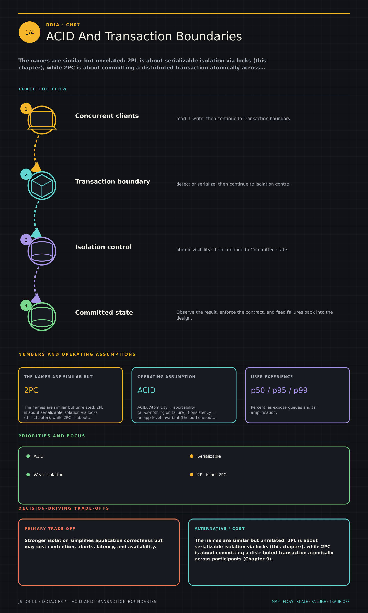

https://frosty110.github.io/js-drill/assets/system-design/infographics/ddia/ch07/acid-and-transaction-boundaries.pngThe names are similar but unrelated: 2PL is about serializable isolation via locks (this chapter), while 2PC is about committing a distributed transaction atomically across participants (Chapter 9).
How transactions group reads and writes into an all-or-nothing unit to simplify error handling and concurrency, the weak isolation levels that trade correctness for performance, the race conditions each prevents, and the three routes to true serializability.
All questions, model answers and diagrams for Transactions →